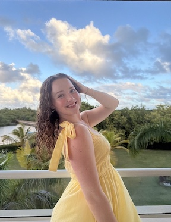

Hi! I'm Paige, a senior here at UMass Amherst majoring in Social Media Marketing through BDIC.


I am from a very small town in Southeast Massachusetts called Lakeville, I am graduating from UMass this spring. I have my real estate license so I hope to start practicing this summer after I graduate. I am currently the social media manager for the BDIC career instagram page- in which everyone is more than welcome and encouraged to follow (@bdic_careers)
I started out here at UMass majoring in Theater, which is now my secondary major. I had an emiphany Freshman year that I would make no money so I set my sights on something else, real estate. My mom was a real estate agent and I had already worked with her and loved it. I transitioned to being a BDIC student and eventually landed on Social Media Marketing as my concentration title
When I am not in Isenberg or in the theater you can find me hanging out with my friends, going home to see my boyfriend and family, or taking random side quests to different states to visit friends- I am not the type to sit still!